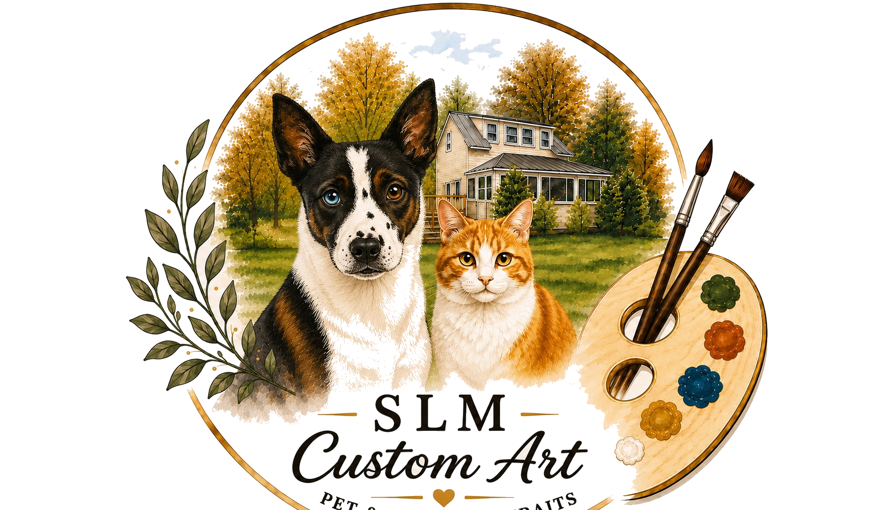
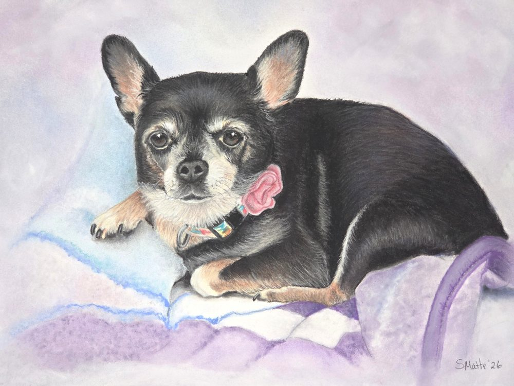
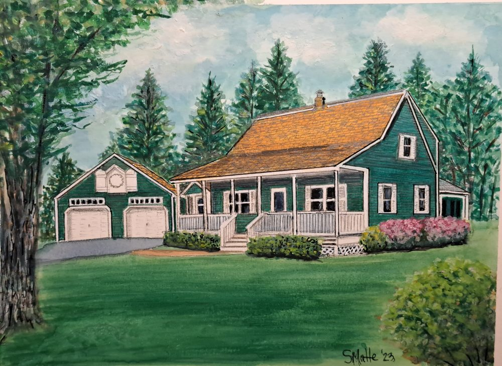

Our pets hold an irreplaceable place in our lives, and a custom watercolor portrait is a beautiful way to celebrate that bond. Whether it's a beloved dog, cat, or any cherished companion, each portrait is painted with care to capture their unique personality — making it a truly one-of-a-kind keepsake or gift.
Order custom pet portrait

For many of us, our homes hold a special place in our hearts and represent a source of genuine happiness. If you're searching for a unique and meaningful gift for a loved one or special occasion, consider a stunning watercolor home portrait. It's a heartfelt way to capture the beauty and personality of a beloved home and create a lasting memory for years to come.
Order custom home portrait